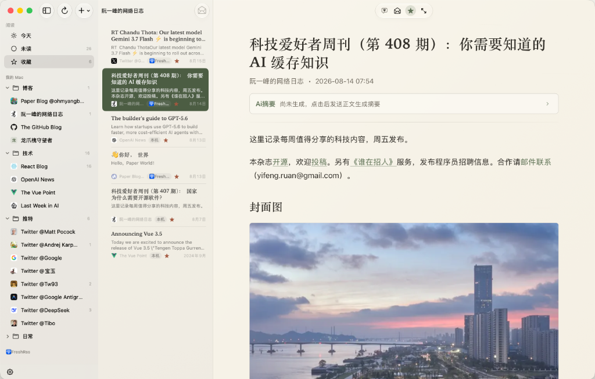
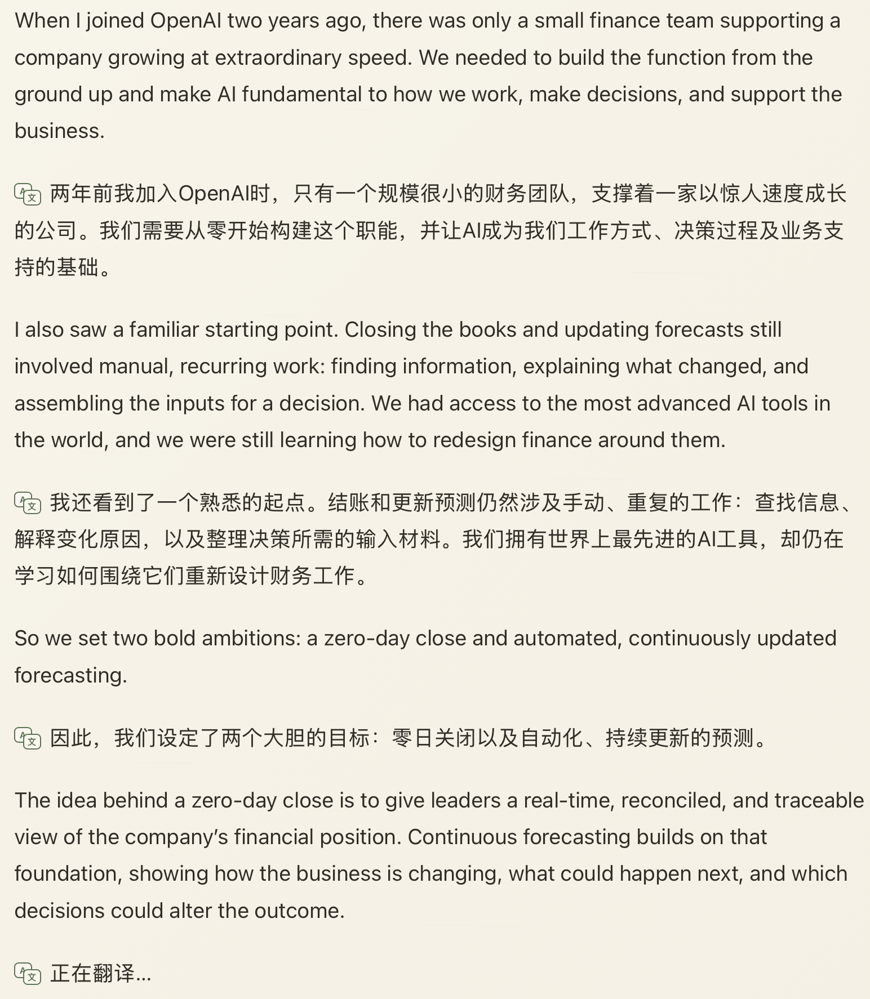
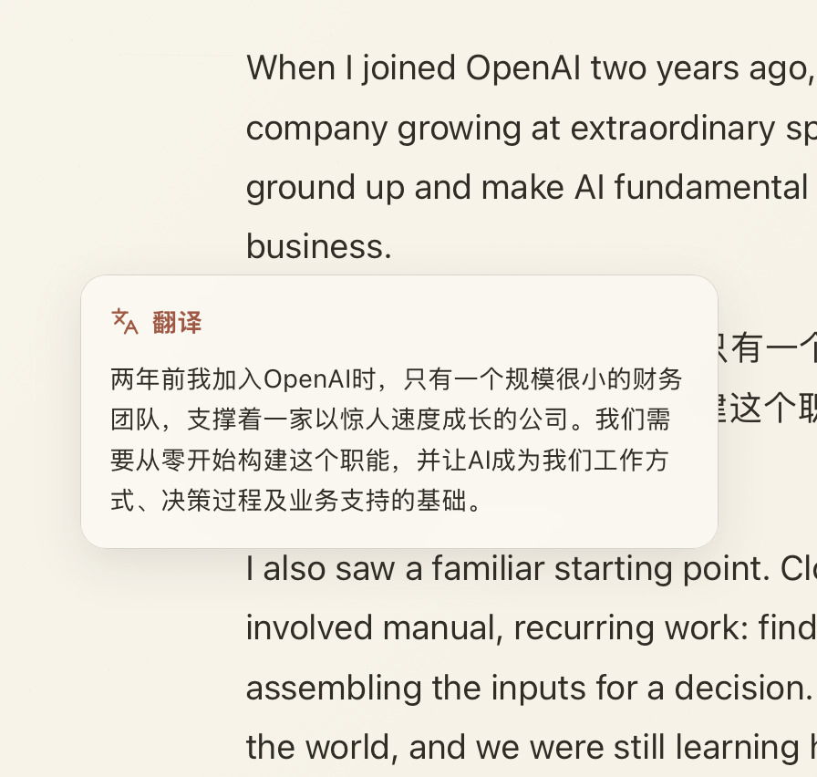

双语流转，克制智能化
让阅读回归纯粹与沉浸
没有喧宾夺主的 AI 噪声，只有恰到好处的全文摘要与划词双语翻译。把散落的全网订阅，还原为安静优雅的纸张阅读。

EDITORIAL EXPERIENCE
兼具美感与效能的阅读体验
01 / BILINGUAL
中英文对照翻译
逐段保留原文与译文，在长文中连续阅读，也能清楚对应上下文。

02 / EXPLAIN & ASK
AI 解释 & 提问
选中文字后，可以结合文章语境直接提问，也可以让 AI 解释陌生词语、概念与背景。


03 / TRANSLATE
划词即时翻译
无需离开阅读页，即可获得当前选中文字的上下文翻译。

支持 PaperRss 持续进化
PaperRss 是独立开发并开源的软件。如果它改善了你的阅读体验，欢迎通过微信赞赏支持开发者，或在 GitHub 提交反馈。

INSTALLATION GUIDE
安装与安全说明
当前 Release 没有 Apple 公证。若首次打开提示无法验证或应用已损坏，请在终端执行：
sudo xattr -rd com.apple.quarantine /Applications/PaperRss.app